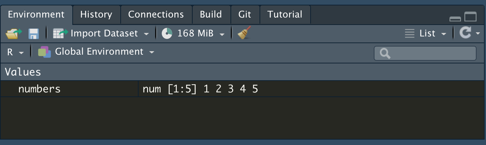

Chapter 7 Basic R (1): Vectors
Objectives:
- To understand what an object is
- To identify vectors
- To learn how to differentiate types of vectors
This chapter will focus on how to start using R for biological data sets and quantitative analysis.
As we have seen in class, R is incredibly powerful for data analysis. But to be able to use it correctly we will have to understand the different types of data structures in R.
7.1 Basic data structures in R
A basic data structure is an n-dimensional object that will store information. Examples of data structures R can handle are vectors, matrices, arrays, data frames and lists.
Data structures in R can be classified according to the number of dimensions:
- Uni-dimensional data structures such as vectors
- Two-dimensional data structures such as data frames or matrices
- N-dimensional data structures such as lists (Dont worry about lists for class)
# One dimensional objects
c(1,2,3,4,5)## [1] 1 2 3 4 5c("A","B","C","D","E")## [1] "A" "B" "C" "D" "E"# Two dimensional objects
data.frame(c(1,2,3,4,5), c("A","B","C","D","E"))## c.1..2..3..4..5. c..A....B....C....D....E..
## 1 1 A
## 2 2 B
## 3 3 C
## 4 4 D
## 5 5 EObjects
Ris able to store any type of variable into an object. To create and object what you have to do is place the name of your object followed by <-, then followed by what you want to store there.
For example, if we want to store the set of numbers in the previous example in an object called numbers we will do the following:
numbers <- c(1,2,3,4,5)
You will see in your Environment pane (upper right) that a new object, called numbers is there:

That means your object has been created.
To check that your object exists, then just write the name of your object in either the R console or your R markdown R chunk block and execute it (hit the play button ion your chunk)
numbers## [1] 1 2 3 4 57.2 Unidimensional objects: Vectors
It has only one dimension, like a table that only has either columns or rows. So, a “list” of infinite objects in only one direction.
This one-dimension object is called a vector, vectors look like this:
numbers <- c(1,2,3,4,5)
letters <- c("A","B","C","D")To initiate a vector object, use the c() style. This will invoke a vector that will be filled with the content separated by commas.
so, when we call them in R, they look like this:
numbers## [1] 1 2 3 4 5letters## [1] "A" "B" "C" "D"Note that there is no info about rows or columns. That means you are working with vectors.
R Functions
The c() command is also called a function.
Functions are the commands that R uses to interpret an order.
In the case of c(), it means Combine Values into a Vector or List
The way the R syntax works is like this:
function(object)
So, for example, if you want to measure the length of an object you use the function length and the object between parenthesis:
length(numbers)## [1] 5Question 1
-
Create three vectors:
-
One named
wordswith your five favorite words -
One named
numberswith your lucky numbers -
One with three numbers and three letters in any order and name it
mixed
-
One named
- Show the code you used to create the vectors
7.2.1 Classes of vectors
Another important command to know if your object is a vector is the class command:
class(numbers)## [1] "numeric"class(letters)## [1] "character"The results shows that we either have integers or characters. These represent vectors of the same type: An integer vector is comprised by numbers, while a character vector is comprised by letters (or other letter-like characters). Character vectors can be identified because the elements in the vector are surrounded by quotation marks (“), while an integer is not
Question 2
-
Which are the classes of the
words,numbersandmixedobjects?
When you read this sentence please clap real loud and call wither Prof. Dresch or me.
7.2.2 Expanding vectors
If you have two vectors of the same class, you can expand them by using the c() command again:
# I want to create a vector of letters times 2 (So each letter twice)
double.letters <- c(letters, letters)
double.letters## [1] "A" "B" "C" "D" "A" "B" "C" "D"# Same with numbers
double.numbers <- c(numbers, numbers)
double.numbers## [1] 1 2 3 4 5 1 2 3 4 5# Or I want to add more numbers to my vector:
more.numbers <- c(numbers, 6, 7, 8, 9, 10)
more.numbers## [1] 1 2 3 4 5 6 7 8 9 10Question 3
- Increase each of your vectors by two or three more elements and add the code and the results.
-
Create an object that combines your
wordsandnumbersvectors. Add the code. - What are the classes of each of the objects you created?